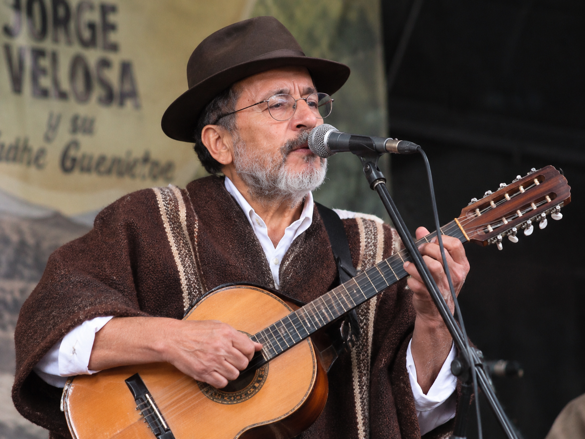
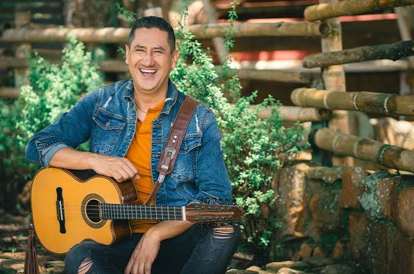

Artistas o Agrupaciones Mas Destacadas
Agrupaciones Musicales o Artistas mas reconocidos y con mayor impacto a nivel Nacional

Jorge Velosa
Jorge Luis Velosa Ruiz nació en Ráquira, Boyacá, en 1949. Es considerado uno de los principales pioneros de la música carranguera. En 1977 participó en la creación de Los Carrangueros de Ráquira, agrupación que ayudó a difundir la música campesina en Colombia. Sus canciones combinan humor, poesía, historias cotidianas y enseñanzas populares. Entre sus temas más conocidos están La cucharita, Julia, Julia, Julia y El rey pobre
Heredero
Su nombre es Féizar Orjuela y es un cantante santandereano que ha contribuido a acercar la carranga a nuevas generaciones. Antes de alcanzar reconocimiento nacional, trabajó como conductor de bus y continuó desarrollando su carrera musical. En 2024 ganó gran popularidad con Coqueta, canción que llevó este género a nuevas audiencias.


San Miguelito
San Miguelito es una agrupación originaria de Tunja, Boyacá, formada por los hermanos Albarracín Barón. Su propuesta busca renovar la música carranguera mediante la incorporación de instrumentos y sonidos modernos, sin abandonar los instrumentos tradicionales. Entre sus canciones conocidas se encuentran La media arepa, La china que yo tenía y El golero emparamao. Su trayectoria demuestra cómo la carranga puede evolucionar y llegar a públicos diferentes
Los Dotores De La Carranga
Esta agrupación surgió en 2006 en Norte de Santander y es dirigida por Carlos Rodríguez Lizarazo. Sus integrantes han utilizado la música para contar historias de la vida cotidiana, las relaciones familiares y las costumbres populares. Entre sus canciones más conocidas están La de estrato 8, Bella y bonita, El honorable concejal y Estrellita errante.


Los K Ramones
a agrupación se formó en agosto de 2014, cuando Esaú Sepúlveda, Diego Santos y Hermógenes Guevara participaron en un concurso de música carranguera en la provincia de Guanentá, Santander. Después de ganar el concurso, decidieron continuar con el proyecto musical y conservar el nombre de Los K Ramones
Los Rolling Ruanas
Es una agrupación bogotana creada en 2014 que combina la música carranguera con el rock y otros géneros. Se dio a conocer ampliamente al publicar versiones carrangueras de canciones de bandas internacionales, y después desarrolló su propio repertorio. Su propuesta mezcla instrumentos tradicionales, como el tiple y el requinto, con sonidos modernos. Es un ejemplo de cómo las nuevas generaciones mantienen viva la música campesina colombiana


Carranga kit
La agrupación nació en 2019 con el propósito de promover la música tradicional andina entre niños y jóvenes. Sus integrantes comenzaron a destacarse por interpretar carranga con instrumentos típicos y por utilizar elementos representativos de la cultura campesina, como la ruana y el sombrero. Carranga Kids ganó La Voz Kids Colombia 2024 el 22 de marzo de 2024. Fue el grupo más votado por el público en la gran final, superando a La Criollita y Matías Hernández